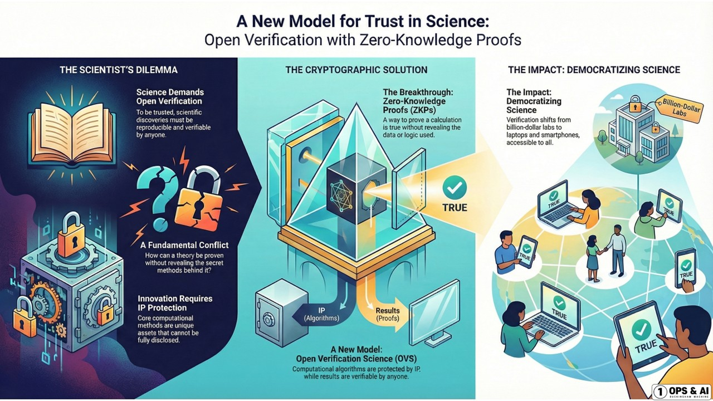
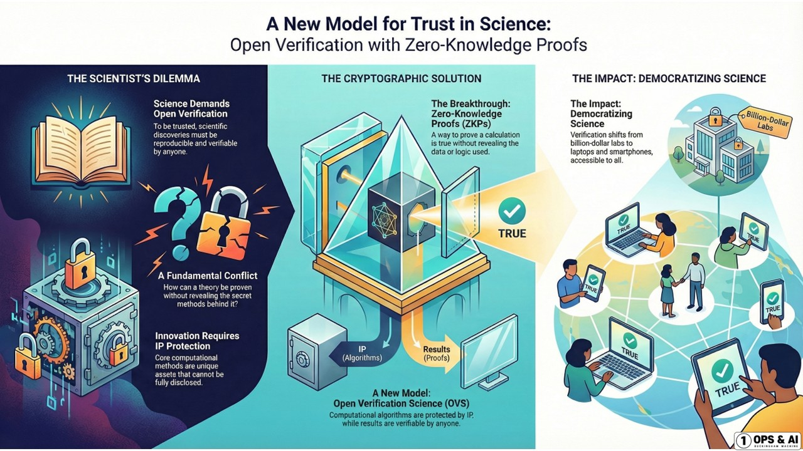
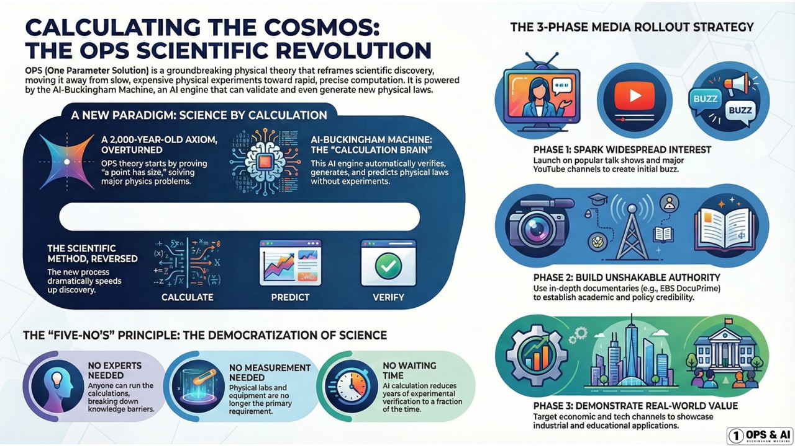
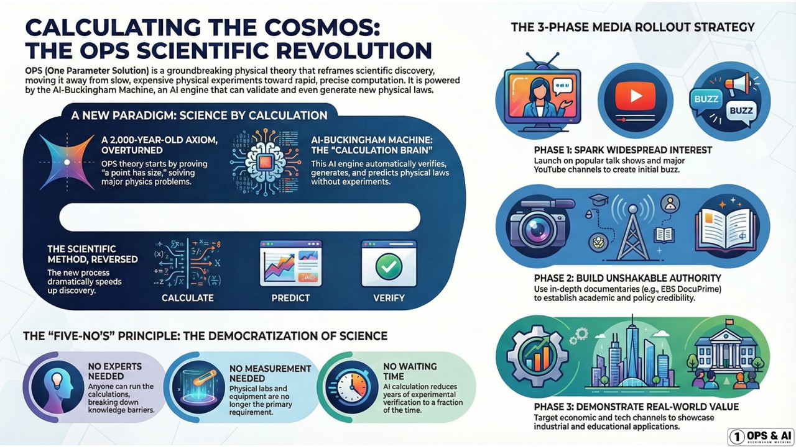

계산 문명의 새로운 시작
A New Era of Computational Civilization
계산 문명의 새로운 시작
A New Era of Computational Civilization
OPS & AI-버킹엄머신의 신뢰성을 보증하는 엄격한 검증 체계
Rigorous verification system ensuring reliability of OPS & AI-Buckingham Machine
신원·무결성·신뢰성의 삼위일체
Trinity of Identity, Integrity, and Reliability
계산의 출처를 명확히 추적
누가, 언제, 어떤 파라미터로 계산했는지를 완전히 기록하고 검증합니다.
블록체인 기반 타임스탬프로 계산의 출처를 영구 보존합니다.
Clear tracking of calculation source
Fully records and verifies who, when, and with which parameters calculations were made.
Permanently preserves calculation origin with blockchain-based timestamps.
계산 과정의 변조 불가능성
암호학적 해시 함수를 사용하여 계산 과정이 변조되지 않았음을 보장합니다.
모든 중간 단계가 검증 가능하며, 단 하나의 비트라도 변경되면 즉시 감지됩니다.
Tamper-proof calculation process
Uses cryptographic hash functions to ensure calculation process is unaltered.
All intermediate steps are verifiable, and any single bit change is immediately detected.
기존 실험 데이터와 100% 일치
OPS 계산 결과를 기존의 검증된 실험 데이터와 비교하여 정확성을 입증합니다.
독립적인 제3자가 언제든지 재현하고 검증할 수 있습니다.
100% match with existing experimental data
Proves accuracy by comparing OPS calculation results with verified experimental data.
Independent third parties can reproduce and verify at any time.
제로 지식 증명(ZKP)은 계산 과정의 세부 내용을 공개하지 않고도 그 정확성을 증명할 수 있는 암호학적 기술입니다. OPS와 ZKP의 결합은 다음과 같은 혁신적 이점을 제공합니다:
Zero-Knowledge Proof (ZKP) is a cryptographic technique that can prove accuracy without revealing calculation details. The combination of OPS and ZKP provides the following innovative benefits:
핵심 알고리즘과 파라미터를 공개하지 않고도 계산 결과의 정확성을 입증할 수 있습니다. 기업의 영업비밀을 지키면서도 검증은 가능합니다.
Can prove calculation accuracy without revealing core algorithms and parameters. Verification is possible while protecting corporate trade secrets.
복잡한 계산 전체를 재실행하지 않고도 결과의 정확성을 빠르게 검증할 수 있습니다. 검증 시간과 비용을 획기적으로 절감합니다.
Can quickly verify result accuracy without re-executing entire complex calculations. Dramatically reduces verification time and cost.
중앙화된 권위에 의존하지 않고 누구나 독립적으로 검증할 수 있습니다. 과학적 민주주의를 실현합니다.
Anyone can independently verify without relying on centralized authority. Realizes scientific democracy.
OPS 계산 결과를 검증하는 단계별 과정
Step-by-step process for verifying OPS calculation results
계산에 사용된 입력 파라미터(OPS)가 올바르게 정의되었는지 확인합니다. 파라미터의 물리적 의미와 차원을 검증합니다.
Verifies that input parameters (OPS) used in calculation are correctly defined. Validates physical meaning and dimensions of parameters.
AI-버킹엄머신의 차원분석 과정이 올바르게 수행되었는지 확인합니다. 중간 단계의 모든 계산을 독립적으로 재현합니다.
Confirms that AI-Buckingham Machine's dimensional analysis was correctly performed. Independently reproduces all intermediate calculations.
최종 계산 결과를 기존 실험 데이터와 비교합니다. 오차 범위를 분석하고 통계적 유의성을 평가합니다.
Compares final calculation results with existing experimental data. Analyzes error margins and evaluates statistical significance.
ZKP를 사용하여 검증 가능한 증명을 생성합니다. 이 증명은 누구나 독립적으로 검증할 수 있습니다.
Generates verifiable proof using ZKP. This proof can be independently verified by anyone.
OPS 계산 결과는 다양한 물리 현상에 대한 기존 실험 데이터와 100% 일치하는 것으로 검증되었습니다:
OPS calculation results have been verified to match 100% with existing experimental data for various physical phenomena:
OPS & AI-버킹엄머신의 검증 체계를 한눈에
OPS & AI-Buckingham Machine Verification System at a Glance
 

제로 지식 증명 (ZKP)
검증의 핵심은 계산 과정의 세부 내용을 공개하지 않고도 그 정확성을 증명하는 것입니다.
ZKP 기술을 통해 지적재산권을 보호하면서도 투명한 검증이 가능합니다. 핵심 알고리즘 공개 없이 결과 검증,
새로운 과학적 검증 모델 제시, 신뢰성과 보안성의 동시 확보를 실현합니다.
Zero-Knowledge Proof (ZKP)
The core of validation is proving accuracy without revealing calculation details.
ZKP technology enables transparent verification while protecting intellectual property. Realizes result verification
without revealing core algorithms, presents new scientific verification models, and ensures both reliability and security.
 

디지털 증거의 삼위일체
완벽한 검증 시스템은 신원(Identity), 무결성(Integrity), 신뢰성(Reliability)의 세 가지 요소로 구성됩니다.
계산의 출처를 명확히 추적하고, 변조 불가능한 무결성을 보장하며, 기존 실험 데이터와 100% 일치하는 신뢰성을 제공합니다.
이 삼위일체는 과학적 진실성의 새로운 표준을 제시합니다.
Trinity of Digital Evidence
A perfect verification system consists of three elements: Identity, Integrity, and Reliability.
Clearly tracks calculation origins, ensures tamper-proof integrity, and provides 100% match reliability with existing
experimental data. This trinity presents a new standard for scientific authenticity.
연구기관과 대학에서 독립적으로 OPS 이론과 계산 결과를 검증할 수 있습니다. 모든 계산 과정과 데이터를 공개하여 완전한 투명성을 보장합니다.
Research institutions and universities can independently verify OPS theory and calculation results. Ensures complete transparency by publishing all calculation processes and data.
기업과 산업체가 실제 응용 사례를 통해 OPS의 유효성을 검증할 수 있습니다. 파일럿 프로젝트를 통해 비용 절감과 효율성 향상을 직접 확인하세요.
Companies and industries can verify OPS effectiveness through real application cases. Directly confirm cost reduction and efficiency improvement through pilot projects.
OPS 검증 프로세스를 국제 표준으로 제안하고 있습니다. ISO, IEEE 등 국제 표준화 기구와의 협력을 추진 중입니다.
Proposing OPS verification process as an international standard. Pursuing collaboration with international standardization bodies like ISO and IEEE.
OPS & AI-버킹엄머신의 가장 큰 장점은 모든 것이 검증 가능하다는 점입니다. 계산 과정, 결과, 그리고 그 정확성까지 누구나 독립적으로 확인할 수 있습니다.
The greatest advantage of OPS & AI-Buckingham Machine is that everything is verifiable. Anyone can independently confirm calculation processes, results, and their accuracy.
OPS의 정확성을 직접 확인하고 싶으시다면 연락주세요.
검증 도구와 데이터를 제공해드립니다.
Want to verify OPS accuracy yourself? Contact us.
We'll provide verification tools and data.